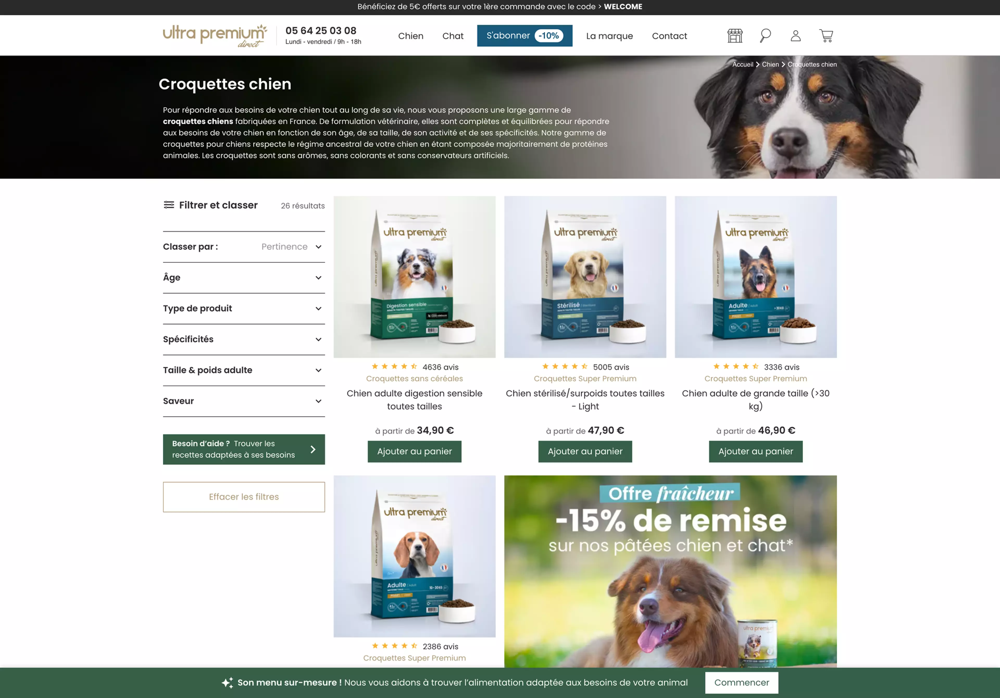

2024
Ultra Premium Direct
Backend Developer
Mission & Réalisation
Amélioration de l'infrastructure backend d'un leader de la vente de petfood en ligne.
L'objectif était d'optimiser la plateforme pour répondre aux exigences élevées de performances et de fiabilité propres à l'e-commerce, notamment via une migration stratégique de l'ancienne plateforme vers Sylius.
Réalisations Clés
- Migration stratégique vers Sylius pour une base technologique évolutive.
- Optimisation de la performance pour des environnements e-commerce à fort trafic.
- Mise en place d'une transition sans faille avec l'équipe.
La Stack
PHP 8
Symfony 5
Sylius 1.10
API Platform
MySQL

